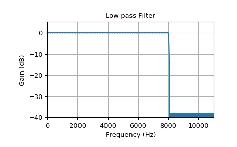
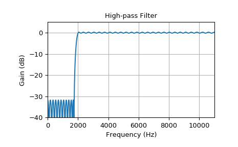
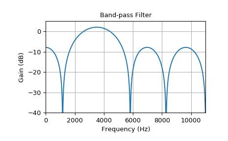
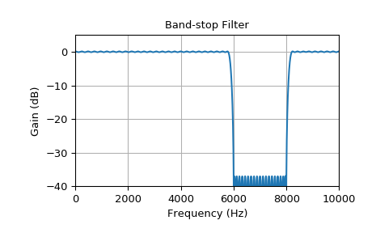

scipy.signal.remez¶
-
scipy.signal.remez(numtaps, bands, desired, weight=None, Hz=None, type='bandpass', maxiter=25, grid_density=16, fs=None)[source]¶ Calculate the minimax optimal filter using the Remez exchange algorithm.
Calculate the filter-coefficients for the finite impulse response (FIR) filter whose transfer function minimizes the maximum error between the desired gain and the realized gain in the specified frequency bands using the Remez exchange algorithm.
- Parameters
- numtapsint
The desired number of taps in the filter. The number of taps is the number of terms in the filter, or the filter order plus one.
- bandsarray_like
A monotonic sequence containing the band edges. All elements must be non-negative and less than half the sampling frequency as given by fs.
- desiredarray_like
A sequence half the size of bands containing the desired gain in each of the specified bands.
- weightarray_like, optional
A relative weighting to give to each band region. The length of weight has to be half the length of bands.
- Hzscalar, optional
Deprecated. Use `fs` instead. The sampling frequency in Hz. Default is 1.
- type{‘bandpass’, ‘differentiator’, ‘hilbert’}, optional
The type of filter:
‘bandpass’ : flat response in bands. This is the default.
‘differentiator’ : frequency proportional response in bands.
- ‘hilbert’filter with odd symmetry, that is, type III
(for even order) or type IV (for odd order) linear phase filters.
- maxiterint, optional
Maximum number of iterations of the algorithm. Default is 25.
- grid_densityint, optional
Grid density. The dense grid used in
remezis of size(numtaps + 1) * grid_density. Default is 16.- fsfloat, optional
The sampling frequency of the signal. Default is 1.
- Returns
- outndarray
A rank-1 array containing the coefficients of the optimal (in a minimax sense) filter.
See also
References
- 1
J. H. McClellan and T. W. Parks, “A unified approach to the design of optimum FIR linear phase digital filters”, IEEE Trans. Circuit Theory, vol. CT-20, pp. 697-701, 1973.
- 2
J. H. McClellan, T. W. Parks and L. R. Rabiner, “A Computer Program for Designing Optimum FIR Linear Phase Digital Filters”, IEEE Trans. Audio Electroacoust., vol. AU-21, pp. 506-525, 1973.
Examples
In these examples
remezgets used creating a bandpass, bandstop, lowpass and highpass filter. The used parameters are the filter order, an array with according frequency boundaries, the desired attenuation values and the sampling frequency. Usingfreqzthe corresponding frequency response gets calculated and plotted.>>> from scipy import signal >>> import matplotlib.pyplot as plt
>>> def plot_response(fs, w, h, title): ... "Utility function to plot response functions" ... fig = plt.figure() ... ax = fig.add_subplot(111) ... ax.plot(0.5*fs*w/np.pi, 20*np.log10(np.abs(h))) ... ax.set_ylim(-40, 5) ... ax.set_xlim(0, 0.5*fs) ... ax.grid(True) ... ax.set_xlabel('Frequency (Hz)') ... ax.set_ylabel('Gain (dB)') ... ax.set_title(title)
This example shows a steep low pass transition according to the small transition width and high filter order:
>>> fs = 22050.0 # Sample rate, Hz >>> cutoff = 8000.0 # Desired cutoff frequency, Hz >>> trans_width = 100 # Width of transition from pass band to stop band, Hz >>> numtaps = 400 # Size of the FIR filter. >>> taps = signal.remez(numtaps, [0, cutoff, cutoff + trans_width, 0.5*fs], [1, 0], Hz=fs) >>> w, h = signal.freqz(taps, [1], worN=2000) >>> plot_response(fs, w, h, "Low-pass Filter")
This example shows a high pass filter:
>>> fs = 22050.0 # Sample rate, Hz >>> cutoff = 2000.0 # Desired cutoff frequency, Hz >>> trans_width = 250 # Width of transition from pass band to stop band, Hz >>> numtaps = 125 # Size of the FIR filter. >>> taps = signal.remez(numtaps, [0, cutoff - trans_width, cutoff, 0.5*fs], ... [0, 1], Hz=fs) >>> w, h = signal.freqz(taps, [1], worN=2000) >>> plot_response(fs, w, h, "High-pass Filter")
For a signal sampled with 22 kHz a bandpass filter with a pass band of 2-5 kHz gets calculated using the Remez algorithm. The transition width is 260 Hz and the filter order 10:
>>> fs = 22000.0 # Sample rate, Hz >>> band = [2000, 5000] # Desired pass band, Hz >>> trans_width = 260 # Width of transition from pass band to stop band, Hz >>> numtaps = 10 # Size of the FIR filter. >>> edges = [0, band[0] - trans_width, band[0], band[1], ... band[1] + trans_width, 0.5*fs] >>> taps = signal.remez(numtaps, edges, [0, 1, 0], Hz=fs) >>> w, h = signal.freqz(taps, [1], worN=2000) >>> plot_response(fs, w, h, "Band-pass Filter")
It can be seen that for this bandpass filter, the low order leads to higher ripple and less steep transitions. There is very low attenuation in the stop band and little overshoot in the pass band. Of course the desired gain can be better approximated with a higher filter order.
The next example shows a bandstop filter. Because of the high filter order the transition is quite steep:
>>> fs = 20000.0 # Sample rate, Hz >>> band = [6000, 8000] # Desired stop band, Hz >>> trans_width = 200 # Width of transition from pass band to stop band, Hz >>> numtaps = 175 # Size of the FIR filter. >>> edges = [0, band[0] - trans_width, band[0], band[1], band[1] + trans_width, 0.5*fs] >>> taps = signal.remez(numtaps, edges, [1, 0, 1], Hz=fs) >>> w, h = signal.freqz(taps, [1], worN=2000) >>> plot_response(fs, w, h, "Band-stop Filter")
>>> plt.show()
